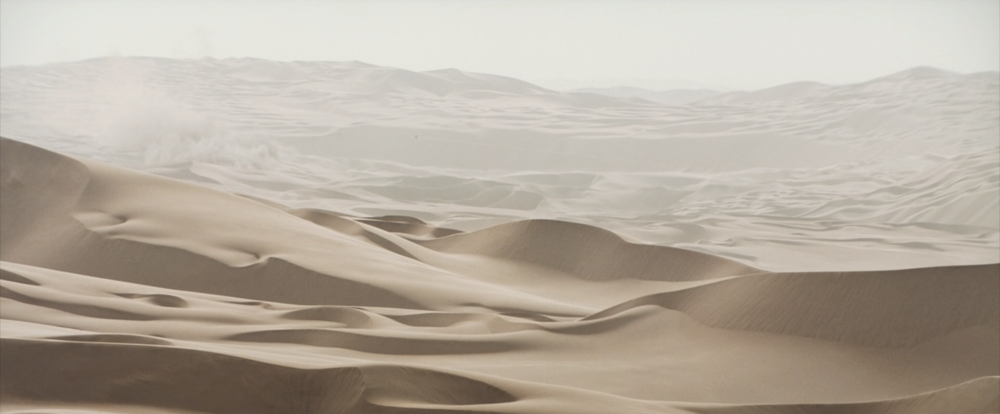
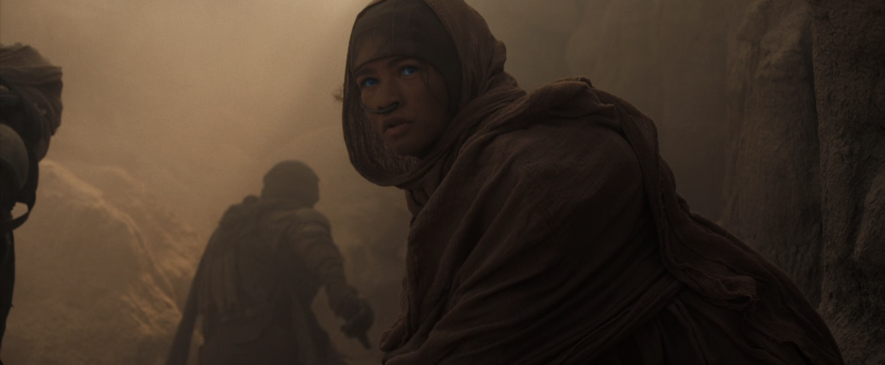
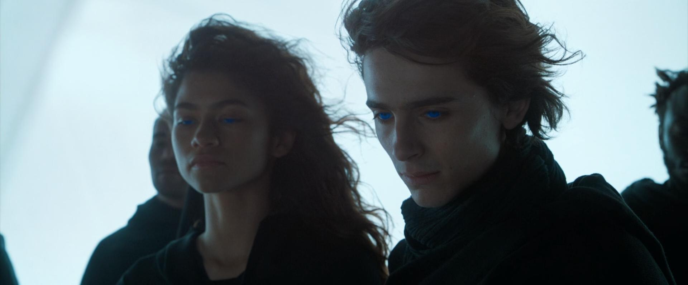
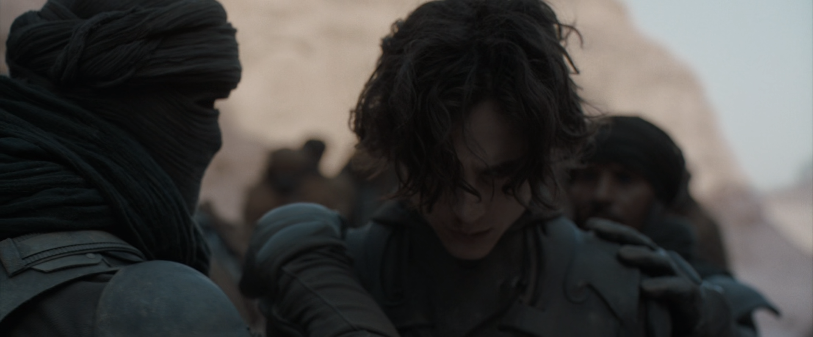

DUNE VÀ NHỮNG GIÁ TRỊ VƯỢT THỜI GIAN
Written on th, by Minh Tran
*Bài viết có tiết lộ nội dung phim
Dune là tác phẩm chuyển thể từ bộ tiểu thuyết cùng tên của nhà văn Frank Herbert. Bộ phim được thực hiện bởi Denis Villeneuve, vị đạo diễn tài ba đã để lại cho mình những ấn tượng cực kỳ sâu sắc qua hai tác phẩm trước đó của ông là Arrival (2016) và Blade Runner 2049 (2017). Những tác phẩm của ông không chỉ hấp dẫn về mặt câu chuyện, hình ảnh mà còn là những suy nghĩ đầy chiêm nghiệm về nhân sinh, thế giới. Sau 4 năm kể từ Blade Runner 2049, vị đạo diễn trở lại màn ảnh rộng bằng một tác phẩm chuyển thể từ trong những bộ tiểu thuyết khoa học viễn tưởng vĩ đại nhất mọi thời đại. Do sự đồ sộ của nguyên tác, lần này ông chỉ chuyển thể một nửa cuốn tiểu thuyết lên màn ảnh, và thật may mắn là Warner Bros. đã ngay lập tức “bật đèn xanh” để phần hai được ra mắt vào cuối năm 2023. Dù chỉ là một nửa câu chuyện của tiểu thuyết gốc, phim đã hoàn toàn thỏa mãn được mong đợi của mình, với phần hình ảnh và âm thanh đỉnh cao, câu chuyện được kể qua những góc máy cực kỳ “nghệ”, và một cái kết cực kỳ đáng mong đợi. Bài viết này sẽ tập trung nêu cảm nhận của mình về các hình ảnh, chi tiết của bộ phim qua những gì mình tìm hiểu, tham khảo được.
Sa mạc và khát khao chinh phục của loài người
Trong phim cũng như nguyên tác, hành tinh cát Arrakis luôn là hình ảnh chủ đạo. Hình ảnh của Arrakis trong phim chính là biểu tượng của những bãi sa mạc dài vô tận trên Trái đất. Dù khô cằn, đơn điệu và khắc nghiệt, sa mạc vẫn mang đến một vẻ đẹp đầy mê hoặc, quyến rũ với con người. Kể từ khi nhận thức được mình chính là bà chủ của thế giới, loài nguời luôn không ngừng chinh phục những giới hạn, bí ẩn của thiên nhiên tạo hóa và sa mạc chính là một trong số đó. Nhưng sa mạc thì lại không nhân nhượng với bất kì ai. Bạn có thể chết dần chết mòn trong tuyệt vọng với cái nóng như lửa thiêu, hoặc bị cuốn phăng ngay lập tức với những cơn bão cát đầy giận dữ. Hình ảnh những con sâu cát trong tác phẩm chính là tượng trưng của những cơn bão cát đó, nuốt chửng tất cả, không cho chúng ta một hi vọng sống sót nào dù chỉ là nhỏ nhất.

Chính bởi vậy, khát khao chinh phục, cai trị những vùng đất cằn cỗi này luôn mãnh liệt bên trong tâm trí của loài người. Trong phim, tộc người Fremen chính là hiện thân của khát khao đó, khi họ có thể tồn tại giữa những bãi cát vô tận, kiểm soát những cơn nổi giận của “mẹ thiên nhiên”, và hơn thế, khai phá được những sức mạnh tiềm ẩn sâu bên trong những cồn cát hoang sơ kia để làm sức mạnh và bảo vệ cho chính mình. Hình ảnh người Fremen cưỡi những con sâu cát trong phim đã trở thành biểu tượng của sự chinh phục, đầy oai hùng và kiêu hãnh của loài người. Đạo diễn còn cài cắm một hình ảnh đầy tinh tế, khi xuất hiện một con chuột len lõi giữa những hạt cát, để chứng minh sự sống của sa mạc vẫn luôn tồn tại, và một ngày nào đó, con nguời sẽ có thể kiểm soát hoàn toàn được vùng đất luôn được ví như địa ngục này.
Số phận của những tộc người bản địa
Bản chất chinh phục và bá quyền của loài người từ xưa đến nay chưa bao giờ thay đổi, dù cho thế giới đã trải qua bao nhiêu cuộc cách mạng về tư tưởng. Bằng chứng là chiến tranh, bạo loạn vẫn xảy ra ở khắp mọi nơi, mới đây nhất là cuộc xung đột Nga-Ukraine. Mình vẫn nhớ mãi một câu văn trong tác phẩm của nhà văn Nguyễn Nhật Ánh, “Xưa nay chiến tranh nổ ra cũng chỉ vì miếng ăn. Mặc dù người ta luôn tìm cách che lấp đi bằng những điều cao cả”. Đúng vậy, con người sẵn sàng chém giết nhau bởi “nhân danh hòa bình” rồi đủ mọi thứ loại nhân danh khác, để tranh giành những lợi ích mà họ cho là thuộc về mình. Các phe phái ngoại bang dòm ngó tới những miền đất hứa mà họ coi những miếng bánh béo bở, và sau cùng, hậu quả chiến tranh thì chỉ có người dân bản địa vô tội phải gánh chịu.

Hành tinh Arrakis chính là một miền đất như vậy, khi là nơi duy nhất trong vũ trụ sở hữu lượng lớn hương dược, khoáng sản quý hiếm nhất trong thế giới của nguyên tác. Dân tộc Fremen là dân tộc bản địa trên Arrakis, nhưng luôn phải chạy trốn, lưu lạc trên chính quê hương của mình bởi sự cai trị hà khắc của gia tộc Harkonnen. Lấy bối cảnh ở rất xa trong tương lai, nhưng thể chế chính trị trong thế giới của Dune mang nặng tính quân chủ, nơi các hành tinh được cai trị bởi các gia tôc. Ở đó, quê hương của người Fremen chỉ là một quân bài chính trị đầy toan tính của những thế lực bên ngoài. Gia tộc Harkonnen chính là một hình ảnh tiêu biểu của chủ nghĩa đế quốc thực dân, hình thức cai trị phổ biến vào thế kỷ 18 và đầu thế kỷ 19. Chúng đô hộ, đàn áp dân bản địa, cướp bóc tài nguyên khoáng sản. Dù bối cảnh trong tương lai, tác giả vẫn dùng những chủ nghĩa này để xây dựng nên thể chế chính trị cho thế giới của tác phẩm như muốn dự đoán rằng, chủ nghĩa thực dân vẫn tồn tại, và một ngay nào đó có thể đứng lên để viết lại “lịch sử huy hoàng” mà nó đã từng có. Số phận của người Fremen đại diện cho số phận của biết bao nhiêu dân tộc trong quá khứ, hiện tại, thậm chí là cả tương lai. Xem phim, ta càng thương cảm cho số phận của những người dân châu Phi và Trung Đông, nơi bạo loạn vẫn ngày đêm xảy ra chỉ vì những cái gọi là “nhân danh công lý, bảo vệ hòa bình” của những quốc gia vẫn được cho là văn minh, dân chủ nhất Trái Đất.
Nhưng con giun xéo lắm cũng quằn, không ai có thể chịu đựng cảnh bị người khác ức hiếp, bóc lột suốt cả cuộc đời. Trong những viễn cảnh mà nhân vật chính Paul Atreides nhìn thấy, người Fremen từ một dân tộc bị áp bức, sau khi giành lại tự do, dường như đã lợi dụng niềm tin tuyệt đối vào Paul, và rồi nhân danh cậu gây nên những cuộc chiến tranh xâm lược khắp thiên hà. Họ sẵn sàng thống trị những dân tộc khác để đạt được quyền lực tuyệt đối cho chính mình. Chúng ta tiếp tục thấy được sự tương đồng của người Fremen với một số thành phần cực đoan ở Trung Đông hiện nay. Họ thành lập nên những tổ chức khủng bố ở Trung Đông, lợi dụng niềm tin tôn giáo để thu phục quân lính, gây ra biết bao nhiêu vụ khủng bố thương tâm cho những thế lực thù địch. Dù ra đời vào thế kỷ trước, nhưng Dune đã phần nào dự cảm được những hành động mà một dân tộc khi phải gánh chịu quá nhiều đau thương có thể làm trong tương lai.
Khi tôn giáo không còn giữ nguyên bản chất tốt đẹp vốn có
Người ta từ lâu đã chứng minh được thế giới này không có thần thánh hay thế lực siêu nhiên nào, nhưng tại sao hầu như trong tất cả chúng ta, luôn luôn có một niềm tin mãnh liệt vào những thế lực bí ẩn đó? Chính vì những niềm tin vô điều kiện như được lập trình sẵn trong tâm trí này, loài người đã sinh ra cái gọi là Tôn giáo. Thế giới có hàng nghìn tín ngưỡng, tôn giáo khác nhau, nhưng về cơ bản những tư tưởng này đều lấy một “vị thánh” làm hình mẫu cho con người, khuyên răn con người luôn làm việc thiện, tránh xa cái ác. Tư tưởng, triết lý của của tôn giáo chính là quy chuẩn cho những người sùng bái tôn giáo đó. Nhưng giá mà con người có thể giữ vững được những tư tưởng cao đẹp này mà không biến tướng, lợi dụng nó để làm công cụ cai trị, phục vụ cho mục đích riêng của mình thì tốt biết mấy.

Trong phim, có thể thấy giáo phái Bene Gesserit chính là liên hệ của tôn giáo ở thế giới thực. Giáo phái chỉ toàn những nữ tu này hoạt động vì mục đích cao cả: định hướng nhân loại đến con đường hoàng kim, một kỷ nguyên khai sáng hoàn mỹ theo lý tưởng của họ. Nhưng theo thời gian, Bene Gesserit dần lún sâu vào mê cung quyền lực, thao túng nhân loại bằng cách reo rắc những tư tưởng về một Đấng Cứu thế (chính là Paul) cho người dân bản địa để đạt được mục đích thống trị của mình. Đối chiếu với thực tại, có thể thấy mọi cuộc chiến ít nhiều đều dùng tôn giáo để làm công cụ. Một thể chế chính trị luôn dùng một hoặc một số tôn giáo làm quy chuẩn để cai trị xã hội. Niềm tin tuyệt đối vào tôn giáo đôi khi sẽ biến bạn trở thành con rối, bị kiểm soát bởi những tham vọng, toan tính riêng của những thế lực xấu.
Bài học về sự đánh đổi và trưởng thành
Con người thường phải trải qua nhiều biến cố làm thay đổi chính cuộc đời họ để trưởng thành. Nhân vật chính Paul Atreides trong Dune đã kết thúc cuộc hành trình đầu tiên, đánh dấu sự thay đổi mãi mãi trong suy nghĩ của cậu. Với những bi kịch đã xảy ra, mất cha, mất thầy, gia tộc phải lưu lạc, giờ đây Paul đã trở thành công tước, người đứng đầu của một gia tộc lớn để mang trên mình trọng trách lớn lao: đánh bại kẻ thù đã gây ra những biến cố cho cuộc đời cậu, khôi phục lại quyền lực của gia tộc. Cái kết phim chính là kết thúc của hành trình trưởng thành đầu tiên, khi Paul vượt qua được những nỗi sợ. Paul cũng xuống tay giết một người lần đâu tiên trong đời sau một hồi do dự, để gia nhập với tộc người Fremen, thực hiện những mục tiêu của mình. Dù biết rằng con đường này sẽ có thể gây ra một cuộc chiến khắp thiên hà nhân danh chính Paul và gia tộc Atreides, và mặc cho mẹ cậu, Lady Jessica, người cũng đã dự cảm được phần nào điều đó, nhưng đây là con đường mà Paul đã chọn, và là con đường duy nhất để cậu có thể hoàn thành trọng trách lớn lao của mình với gia tộc. Paul lựa chọn nó một cách kiên định, vì cậu tin tưởng rằng lựa chọn đó là đúng. Trong cuộc sống, có lẽ cũng sẽ có nhiều lần ta phải đối mặt với những lựa chọn khó khăn như vậy, và không phải lúc nào những lựa chọn đó cũng đúng. Nhưng điều quan trọng nhât chúng ta hãy tin tưởng vào những lựa chọn của mình, sẵn sàng đánh đổi và kiên định để theo đuổi nó. Đúng hay sai, hãy để thời gian trả lời. Liệu sự đánh đổi này sẽ khiến Paul trở nên cuồng tín sự thống trị, hay cậu sẽ vẫn giữ lại những lí tưởng cao cả mà cậu đã từng theo đuổi, chúng ta hãy cùng chờ xem.

Kết
Với những thông điệp vượt thời gian như vậy, Dune thực sự là một trải nghiệm điện ảnh mà bất kì ai cũng nên thưởng thức, không chỉ một lần mà còn có thể rất nhiều lần. Dù chỉ ra mắt một nửa câu chuyện lên màn ảnh rộng, chưa thực sự có nhiều diễn biến kịch tính, Dune vẫn mang đến một câu chuyện đầy chiều sâu, thể hiện được tầm nhìn cực kỳ bao quát của tác giả về thế giới, bao gồm cả chính trị, tôn giáo. Như chính câu thoại mà nhân vật Chani của Zendaya đã nói, “This is only the beginning”, và phần phim này mới chỉ là phần khởi đầu thôi. Phần tiếp theo của tác phẩm sẽ rất đáng chờ đợi, đặc biệt là những fan hâm mộ của tiểu thuyết gốc cũng như những tín đồ mê Sci-fi như mình. Hành trình của Paul sẽ được tiếp nối trên màn ảnh rộng vào cuối năm 2023. Liệu Paul có thực sự trở thành ngòi lửa chiến tranh với cả thiên hà, hay sẽ gạt bỏ những trọng trách trên vai mà cha cậu không muốn đặt nặng để trở thành người con trai tốt của ông? Với những gì đã thể hiện ở phần một, mình tin đạo diễn Denis Villeneuve sẽ đem đến một phần hai thật bùng nổ cả về thông điệp và cảm xúc. Với 10 đề cử ở Oscar 2022, phim ẵm về tới 6 tượng vàng, nhưng chủ yếu ở các hạng mục kỹ thuật. Hi vọng với phần 2, phim sẽ là một ứng viên nặng ký ở những hạng mục chính, bao gồm cả Best Picture.